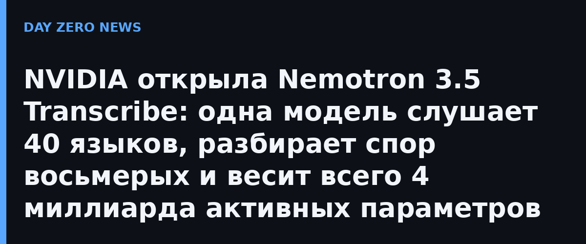

NVIDIA представила Nemotron 3.5 Transcribe — речевую модель, которая объединяет то, что раньше собирали из нескольких программ: дословную и «причёсанную» транскрипцию, разбор речи с несколькими говорящими, перевод и вопросы по аудиозаписи. В основе — гибридная Mamba–Transformer MoE-модель Nemotron 3.5 Lightning: около 34 млрд параметров всего, но лишь ~4,3 млрд активных на шаг, поэтому модель быстрая и дешёвая в запуске. Стиль результата задаётся обычной текстовой инструкцией — без дообучения: попросила дословник, получила дословник.
По данным NVIDIA, модель транскрибирует 40 языков, переводит 31 из них в английском направлении, различает до восьми говорящих и работает с записями длиной до часа. На англоязычном Open ASR Leaderboard средний WER составил 4,71%, на мультиязычном — 4,62%: лучший результат среди открытых весов. По записям с наложениями голосов заявлен рекорд точности среди систем с привязкой речи к говорящему — это первая речевая LLM, обогнавшая специализированные каскадные системы. Парой к модели вышел датасет Granary v2 — 463 062 часа речи на 48 языках из 16 корпусов.
Модель выходит под лицензией OpenMDW-1.1 с правом коммерческого использования, вместе с инструментами дообучения NeMo Speech и поддержкой vLLM. Обещаны квантованные версии: модель можно запускать локально на RTX, DGX Spark, Jetson AGX Thor и дата-центровых Blackwell. Для совещаний, созвонов, многоязычной поддержки и медиоархивов это означает простое: распознавание можно держать у себя, не отправляя запись в чужое облако.
NVIDIA предупреждает: модель заточена под записанное аудио, а не под живую потоковую речь, и общим ассистентом она не является. Зато набор умений звучит как ТЗ на целый отдел: кто говорит, что сказал, как это оформить и перевести — всё из одного чекпойнта.